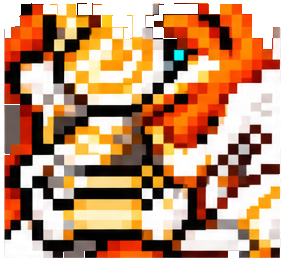
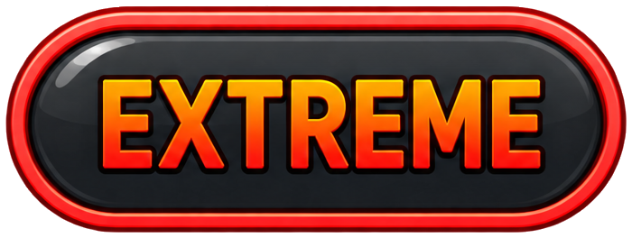
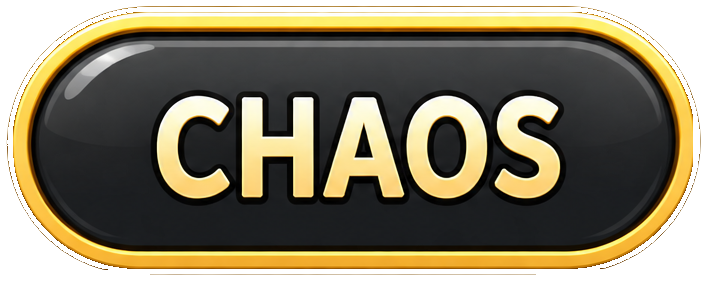

Kalos el Guardián (Ckalos)
Día(s)
Parties

Sebas (Bishop), Franklin (Wind Archer), Tacos (Adele), Choscar (Demon Slayer)Full blink
Franklin (Sia), Sebas (Kanna), Choscar (Erel)Full blinkFranklin (Battle Mage), Danna (Angelic Buster)Danna Full prio
Sebas (Erel), Franklin (Lynn), Tacos (Hayato)Full blink
Danna (Lynn), Mechitax (Hoyoung), Sushimitzu (Night Walker)Full blink
Notas